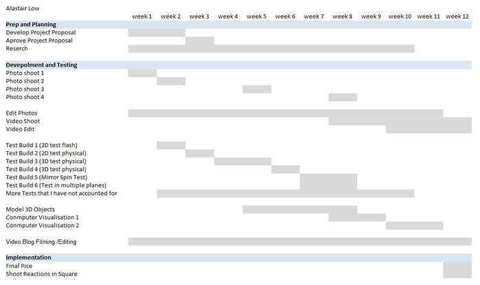

This is project for my Graded unit 2 at Central College Glasgow.
We were asked to create an artwork inspired by St Enoch square in Glasgow. This is a place with has undergone a lot of changes and during the project a new renovation was underlay thought the duration of the project.
Create a proposal for a believable animated kinetic sculpture which reflects the squares diversity and and ignored inhabitants, ie pidgins.
The pice should be:
fun and welcoming
Reflect the diversity of the square
Well documented in the process it took to make
A website along woth other pormotonal material. (try to generate an online presence)
An interesting way of documenting the progress of the Project.
A serise of tests/prototypes whitch illistrate how an actual pice would work.

Download the full pdf brief here
Download the full pdf Evaluation here
Follow me on twitter and subscribe to my youtube channel
email : Lowtek@hotmial.co.uk
website : lowtek.co.uk
Site By Alastair low of Lowtek